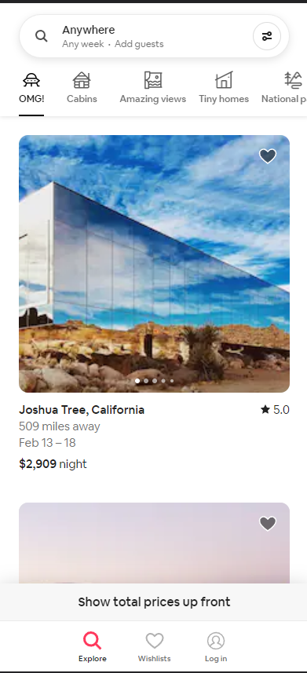
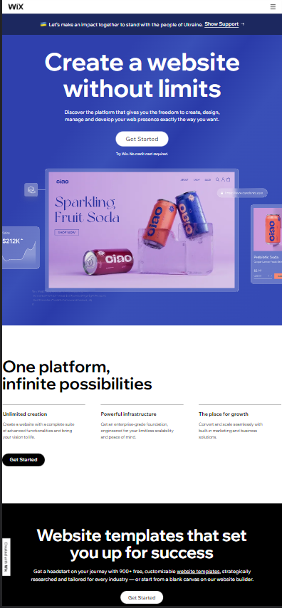

Design Principles
Aaron Lopez
White Space and Clean Design
Airbnb
airbnb.com
Airbnb makes great use of padding, white space, and clean design. I absolutely love that I get right away some recommendations but it is presented in such a simple way. I see a house with its price and ratings. Right above I see a search bar and icons for quick access to specific suggestions. No clutter at all or confusion to be had here.
Hick's Law
Wix
Wix.com
Hick’s Law speaks about having to many options delays action. If I am looking for a place to create my website its most likely that I am looking for a fast yet efficient tool. This site gives me a big get started button right away. My eyes go straight to that button and its an easy click and now I am in.
PARC: Contrast
Pluralsight
Pluralsight.com
Pluralsight’s website provides vibrant color and contrast. The white with the different purples hues make it easy for readability. Coupled with good font sizes and button sizes this site is pleasing on the eyes with no strain to see anything on it.